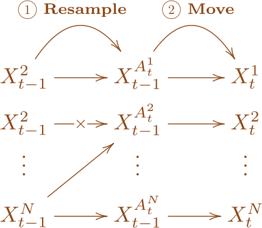
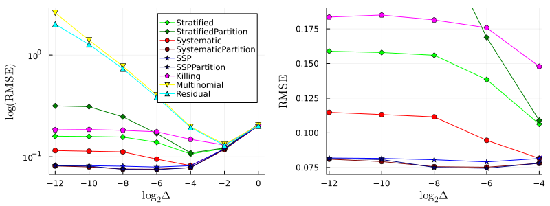

Inquiry towards a Continuous Time Limit and Scalability
Particles
Computation
Poster
作者
Hirofumi Shiba
公開
3/08/2024
Abstract
Recently developments in continuous-time MCMC algorithms have emerged as a promising direction for scalable Bayesian computation. This poster explores their SMC counterparts. A new finding about a continuous-time limit of particle filter is discussed.
A Blog Entry on Bayesian Computation by an Applied Mathematician
A Recent Development of Particle Filter. Tap the image to view PDF
The following is a detailed version of the poster presented at MLSS2024, S3-41, March 8 (Fri) 18:00-19:30.
Takeaways
Compared to their discrete-time counterparts, Monte Carlo methods based on continuous-time processes exhibit superior computational efficiency and mixing rates, making them more suitable for high-dimensional applications.
1 What Is Particle Filter?
Particle filters, also known as Sequential Monte Carlo methods (SMCs), were invented in (Kitagawa, 1993) and (Gordon ほか, 1993) independently as an simulation-based algorithm which performs filtering in non-Gaussian and non-linear state space models, overcoming the weeknesses of then-standard Kalman-based filtering methods.1
In particle-based approaches, a filtering distribution is approximated by a cloud of weighted samples, hence giving rise to the term ‘particle filter’. The samples are propagated to approximate the next distribution, leading to efficient sequential estimation in dynamic settings.
Recent developments have highlithgted the capability of particle filters as general-purpose samplers, extending their applicability beyond the traditional realm of temporal graphical models to a broader range of statistical inference problems. This versatility has earned them the alternative name ‘SMC’, a term reminiscent of ‘MCMC’. This poster trys to be another contribution in this direction.
2 MCMC vs. SMC
PDMPs (Piecewise Deterministic Markov Processes) (Davis, 1984), a type of continuous-time Markov processes with jumps as their only random components, play a complementary role to diffusion processes in stochastic modelling.2
In (Peters と de With, 2012), a PDMP was identified through the continuous limit of the MCMC, Metropolis-Hastings algorithm. The PDMP was further investigated and termed Bouncy Particle Sampler (BPS) in (Bouchard-Côté ほか, 2018).
Enpirical evidence suggests that continuous-time MCMCs are more efficient than their discrete-time counterparts.
Interestingly, continuous-time algorithms seem particularly well suited to Bayesian analysis in big-data settings as they need only access a small sub-set of data points at each iteration, and yet are still guaranteed to target the true posterior distribution. (Fearnhead ほか, 2018)
3 Inquiry for Continuous-time SMC
Despite the success of continuous-time MCMC, the continuous-time limit of SMC has not been fully explored. The continuous-time limit of SMC is expected to be a jump process, which is similar to PDMP, but is more diffusion-like.
MCMC has now taken a step ahead; it is time for SMC to explore its continuous-time limit!
3.1 A Generic Particle Filter: An Algorithmic Description

Procedure of a generic step of a particle filter at time \(t\)
Resampling Step
Particles with high weights are duplicated, and those with the lowest weights are discarded.
Movement Step
Subsequently, a MCMC move is executed from the resampled particles.
The resampling step is the key difference from sequential importance sampling methods. Particle filters incorporate a resampling step to occasionally reset the weights of the samples, while maintaining the overall distribution they represent, in order to prevent the effective number of particles participating in the estimation from becoming too small–a situation also called weight degeneracy.
3.2 A Necessary Condition: Resampling Stability
In order to have a time-step \(\Delta\to0\) limit, resampling events must occur with (at most linearly) decreasing frequency as \(\Delta\to0\).
Only the most efficient resampling schemes satisfy this property.

Root mean squared errors of marginal likelihood estimates (Chopin ほか, 2022)
4 The Continuous-time Limit Process
The continuous-time limit process, if it exists, is characterized by a Feller-Dynkin process, whose infinitesimal generator is given by:
SMC with efficient resampling schemes possess a continuous-time limit \(\Delta\to0\), which turns out to be a Feller-Dynkin process, a diffusion process with jumps, when \((X_t)\) is a diffusion.
6 Forthcoming Research
Ultimate Purpose
How can we leverage the knowledge of the continuous-time limit process to design efficient Sequential Monte Carlo (SMC) samplers capable of sampling from posterior distributions of diffusions?
What are the properties of this limit jump process, and how do they change with modifications to the underlying latent process?
How does the timing of resampling affect overall efficiency? Can insights be gained from the perspective of continuous-time limits?
Does the continuous-time limit process improve SMC efficiency when used for particle propagation?
Gordon, N. G., Salmond, D. J., と Smith, A. F. M. (1993). Novel Approach to Nonlinear/Non-Gaussian Bayesian State Estimation. IEE Proceedings-F, 140(2), 107–113.
@online{shiba2024,
author = {Shiba, Hirofumi},
title = {A Recent Development of Particle Methods},
date = {2024-03-08},
url = {https://162348.github.io/posts/2024/Particles/PF.html},
langid = {ja},
abstract = {Recently developments in continuous-time MCMC algorithms
have emerged as a promising direction for scalable Bayesian
computation. This poster explores their SMC counterparts. A new
finding about a continuous-time limit of particle filter is
discussed.}
}